Vorlesung 13 · BIS242
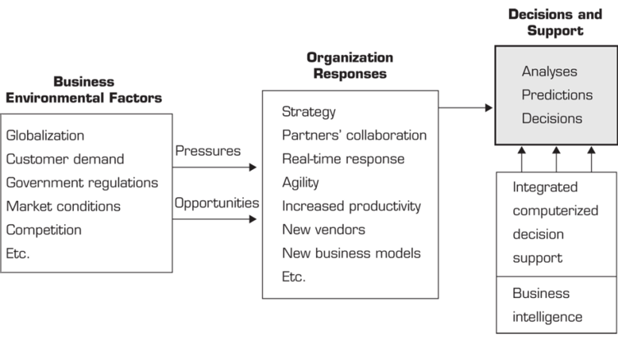
CPM ist ein ganzheitliches Managementkonzept zur durchgängigen Steuerung und Leistungsmessung in Unternehmen.
Es ist definiert als ein Schmelztiegel vieler technologischer und betriebswirtschaftlicher Ansätze, um Führungsaufgaben im Sinne eines Regelkreises zu unterstützen. Dabei geht es v.a. um die Ausarbeitung von Strategien sowie die betriebswirtschaftlichen Aktivitäten für die Planung und Budgetierung.
The combination of management methodologies, metrics and technologies that enables users to define, monitor and optimize results and outcomes to achieve personal or departmental objectives, while enabling alignment with strategic objectives across multiple organizational levels: personal, process, group, departmental, corporate or business ecosystem.
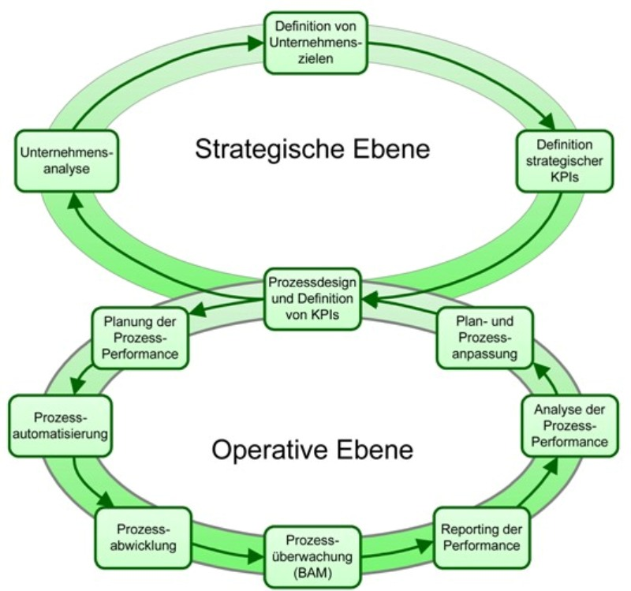
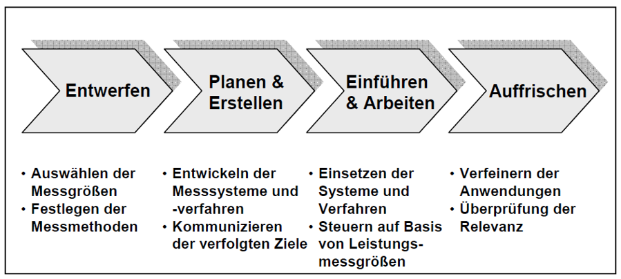
CPM System:
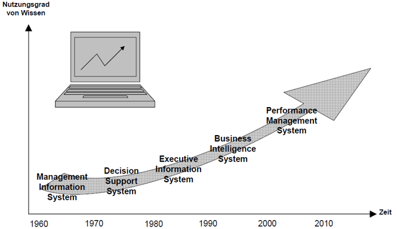
| DWH & Business Intelligence | CPM | ||||
|---|---|---|---|---|---|
| Vergangenheitsorientiert | Trends / Planung |
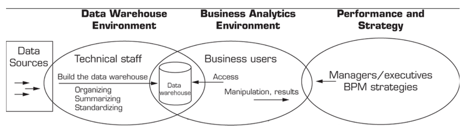
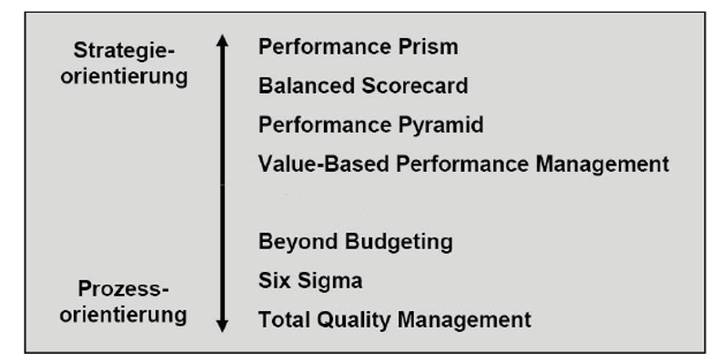
Kennzahlen sind verdichtete Informationen über quantifizierbare Tatbestände. Sie sollen sowohl eine einfache Kontrolle von Abläufen und Ergebnissen ermöglichen als auch deren Planung.
Kennzahlen, anhand derer der Fortschritt oder der Erfüllungsgrad hinsichtlich wichtiger Zielsetzungen oder kritischer Erfolgsfaktoren innerhalb einer Organisation gemessen und/oder ermittelt werden kann.
Stellen die Verbindung zwischen Strategie und Umsetzung her.
Gesamtheit von geordneten Kennzahlen, die die Zusammenhänge zwischen verschiedenen Größen aufzeigen und so betriebswirtschaftlich sinnvolle Aussagen über das Unternehmen vermitteln.
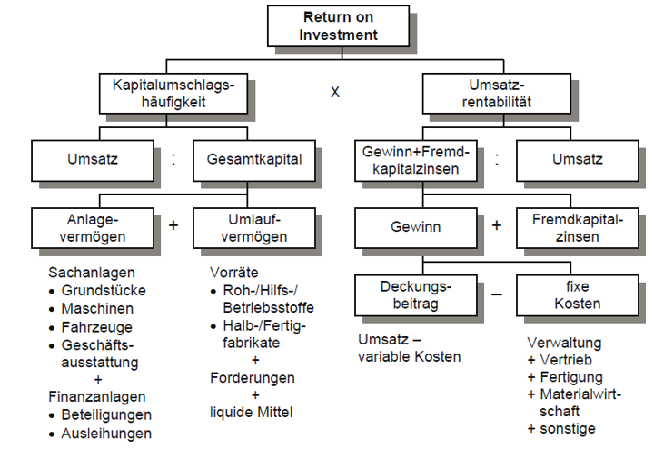
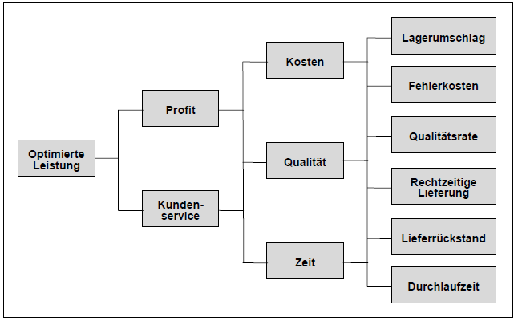
| Traditionelles Kennzahlensystem | Performance Measurement-System |
|---|---|
| Monetäre Ausrichtung (vergangenheitsorientiert) | Kundenausrichtung (zukunftsorientiert) |
| Begrenzt flexibel; ein System deckt interne und externe Informationsinteressen ab | Aus den operativen Steuerungserfordernissen abgeleitete hohe Flexibilität |
| Einsatz primär zur Überprüfung des Erreichungsgrads finanzieller Ziele | Überprüfung des Strategieumsetzungsgrads; Impulsgeber zur weiteren Prozessverbesserung |
| Kostenreduzierung | Leistungsverbesserung |
| Vertikale Berichtstruktur | Horizontale Berichtstruktur |
| Fragmentiert | Integriert |
| Kosten, Ergebnisse und Qualität werden isoliert bewertet | Qualität, Auslieferung, Zeit und Kosten werden simultan bewertet |
| Unzureichende Abweichungsanalyse | Abweichungen werden direkt zugeordnet (Bereich, Person) |
| Individuelle Leistungsanreize | Team-/Gruppenbezogene Leistungsanreize |
| Individuelles Lernen | Lernen der gesamten Organisation |
|
Bereich |
Typische Herausforderungen |
Ziele |
Messgrößen |
Wichtige Dimensionen |
Schnittstelle (Wert-)Controlling |
|---|---|---|---|---|---|
|
Kundenservice |
Lieferpünktlichkeit, Beschwerden, Garantieansprüche,Service-Nutzen |
Reduzierung der Lieferzeit, Reduzierung der Beschwerden, Verkürzung der Antwortzeiten von Ansprüchen, Reduzierung der Service-Kosten |
Durchschnittliche Lieferzeit, Anzahl Beschwerden, Anzahl Gewährleistung, durchschnittliche Zeit bis zur Klärung von Produktproblemen, Service-Kosten |
Kunden(-gruppen), Produkt-/Servicebereiche, Regionen |
Verspätungskosten, Kundenwerte, Gewährleistungskosten |
|
Produktentwicklung |
Kontinuierliche Produkt-innovation, Qualitätssicherung, Markt- und Kundenfeedback |
Hohe Innovationsrate, Kundenzufriedenheit, Steigerung des Marktanteils |
Anteil neuer Produkte am Umsatz, Kundenzufriedenheitsindex, Marktanteil |
Produkte, Kunden, Regionen |
Qualitätskosten, Zielkosten (Target Costing) |
|
Personalwesen |
Personalbedarf, Systematische Personalentwicklung, Vergütung, Zusatzleistungen |
Besetzung der notwendigen Profile, Mitarbeiterzufriedenheit |
Skill-Abdeckung, Fluktuation, Fehlzeiten |
Mitarbeiter, Profile, Organisation |
Personalkosten, vom Personal abhängige Kosten (z. B. Reisekosten) |
|
Logistik |
Lagerbestände, Fehlmengen |
Optimierung der Lagerbestände, Reduzierung der Fehlmengen |
Lagerwerte, Lagerreichweiten, Fehlbedarfe |
Produkte, Lager, Lieferanten |
Lagerkosten, Fehlmengenkosten |
| Bereich | Basisinformation |
|---|---|
| Produktentwicklung | • Anzahl der aktiven Produkte • Durchschnittliche Durchlaufzeit der Produktneuentwicklung • Durchschnittlich geplante Durchlaufzeit der Produktneuentwicklung, Kosten der Produktentwicklung/-konstruktion und -designs, Kosten der produktbezogenen und -design, Produktforschungskosten, Anzahl neuer Produkte, Anzahl neuer Produktvarianten, Anzahl der nicht erfolgreichen neuen Produkte, Gesamtanzahl der auf Kundenbeschwerden bezogenen Designänderungen, Änderungskosten der Konstruktionszeichnungen, Gewährleistungs-/Garantiekosten für neue Produkte, Anzahl spät lancierter Produkte in den letzten drei Jahren, Anzahl der Patente in der letzten Periode, Anzahl der bestehenden Patente, Anzahl der mitkonstruierten Produkte, Anzahl der recycelten Komponenten, Gesamtanzahl der produzierten Komponenten • Anzahl der Materialien mit Mehrfachverwendung, Anzahl der verwendeten Materialien |
| Marketing und Vertrieb | • Anzahl neuer Kunden • Gesamtanzahl der A-Kunden • Marktanteil des Hauptprodukts • Marketingkosten • Umsätze aus Produkten mit ökologischem Zertifikat • Umsätze mit neuen Kunden • Umsätze aus Ausschreibungen • Durchlaufzeit der Ausschreibungsvorbereitung • Ausschreibungswert • Kosten für die Ausschreibungsvorbereitung • Erfolgreiche Ausschreibungen • Anzahl der Ausschreibungen • Verlorene Kunden • Kundenbesuche • Anzahl der zu den Kunden gesendeten Rechnungen/Faktura • Anzahl pünktlicher Kundenzahlungen Wert der annullierten/abbestellten Aufträge • Verkaufte Produkte • Anzahl der Kundenvorschläge • Anzahl umgesetzter Kundenvorschläge • Umsätze aus neuen Produkten |
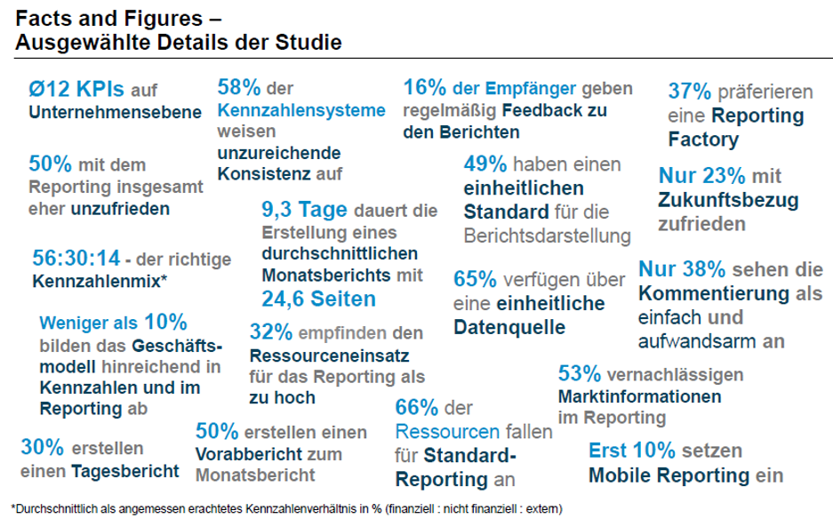
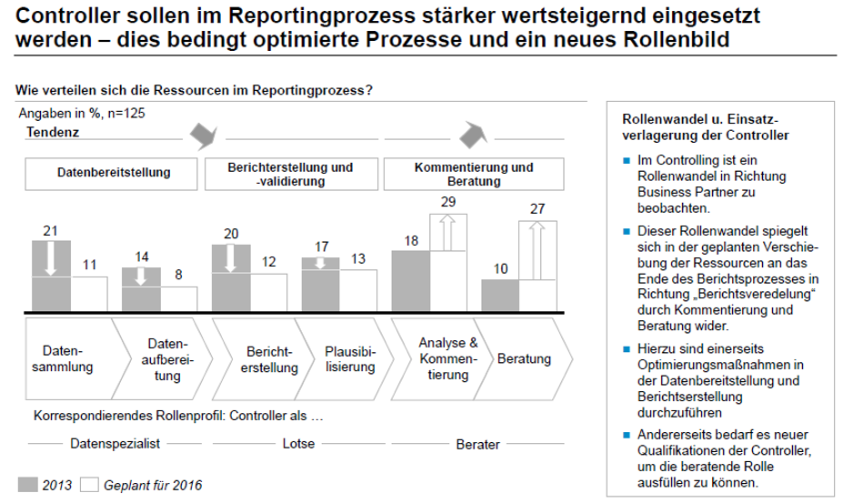
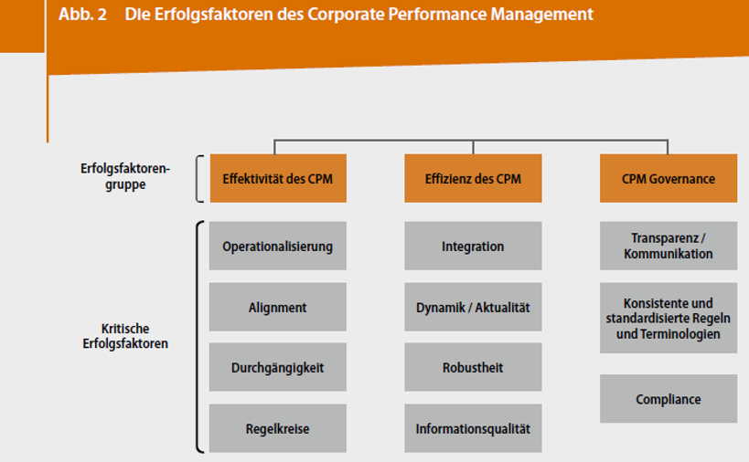
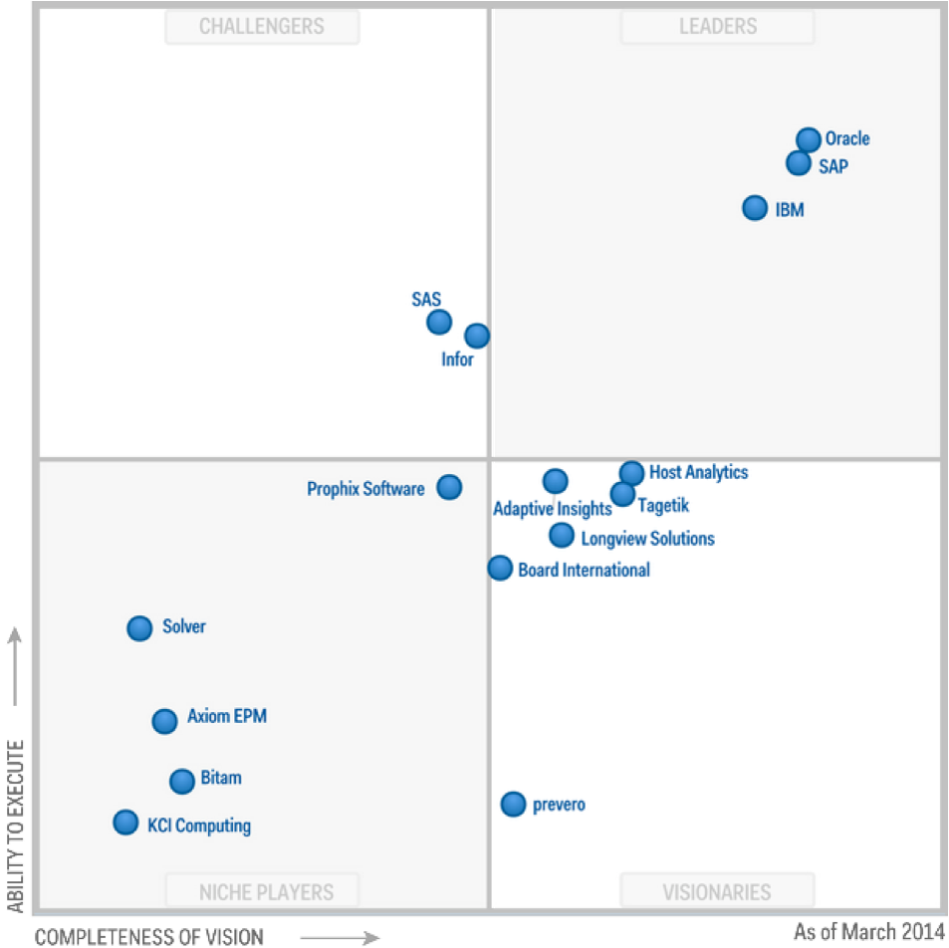
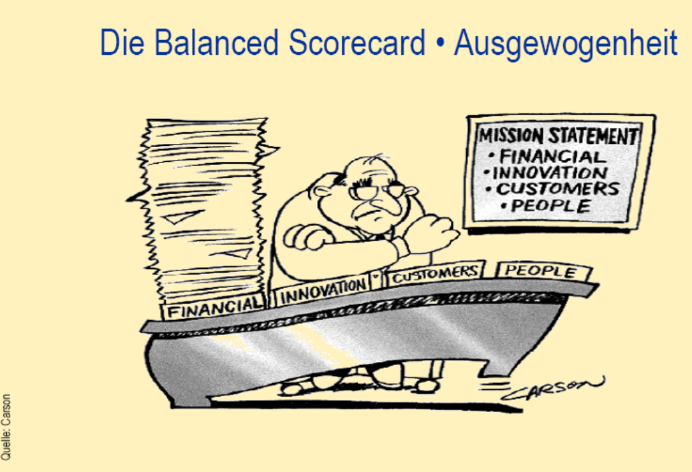
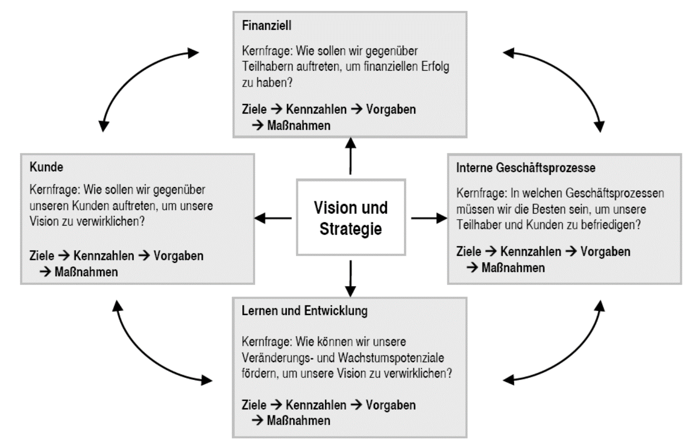
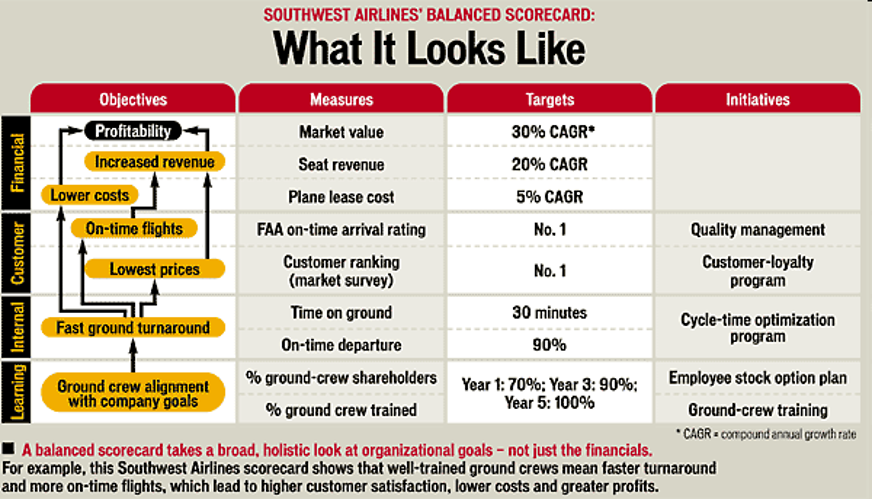
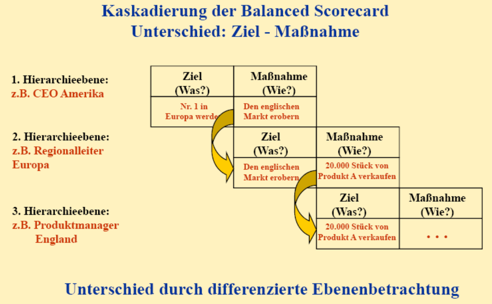
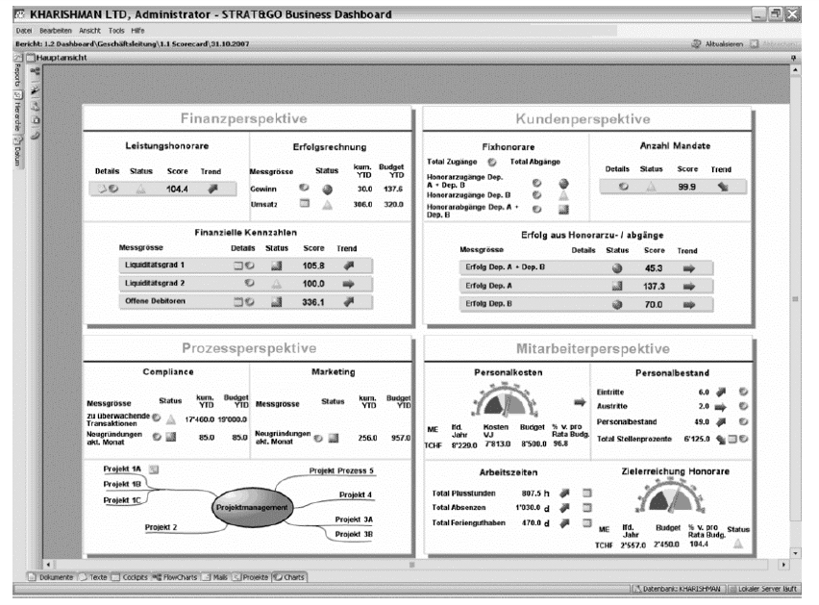
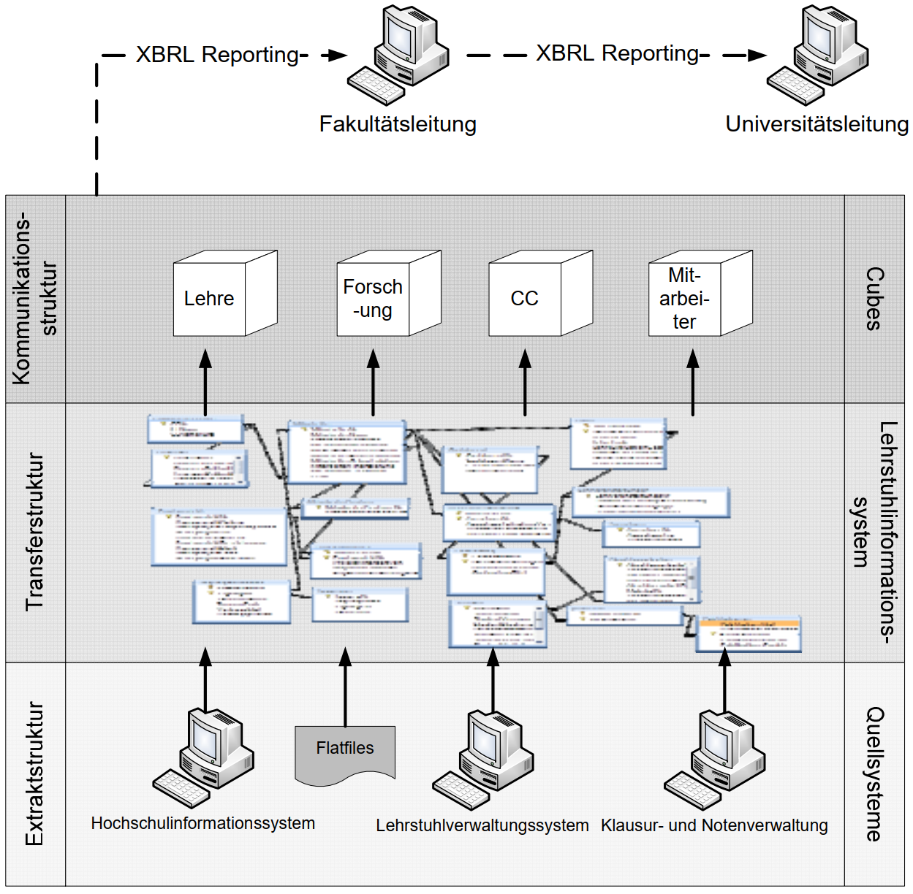
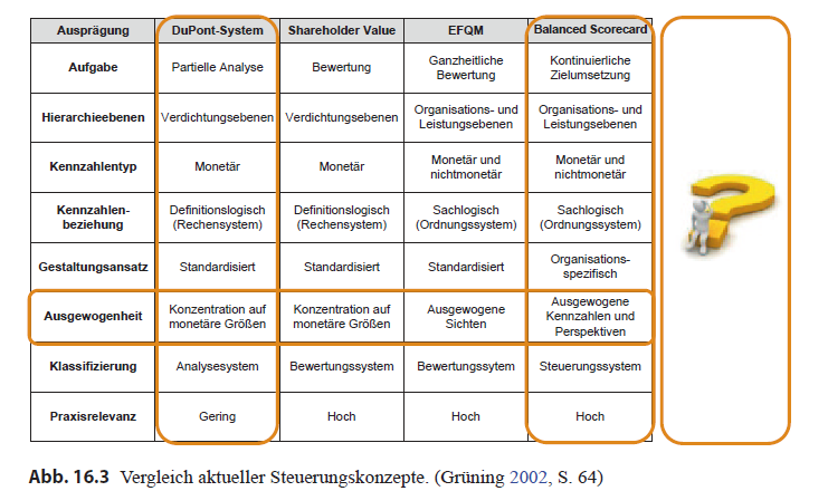
A business model describes the rationale of how an organization creates, delivers and captures value
Umfassendere Unternehmenssteuerung als durch die BSC
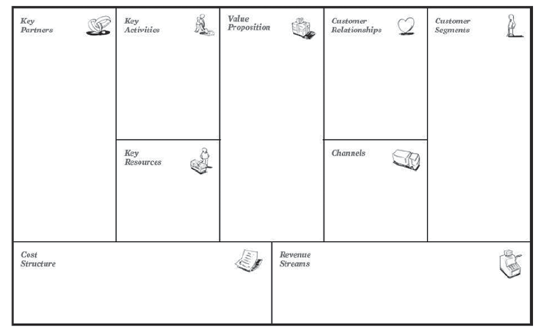
Die BSC Perspektiven decken nicht alle erfolgskritischen und somit steuerungsrelevanten Faktoren eines Unternehmens ab.
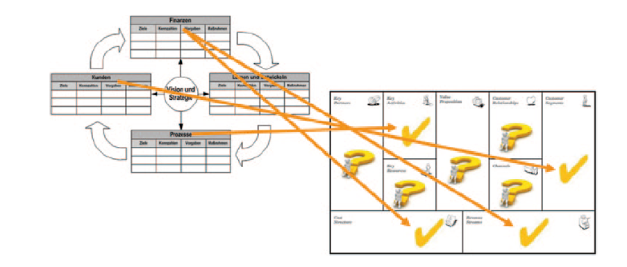
Steuerungsdomänen der Geschäftsmodellkomponenten
(Beispiel Logistikbranche)
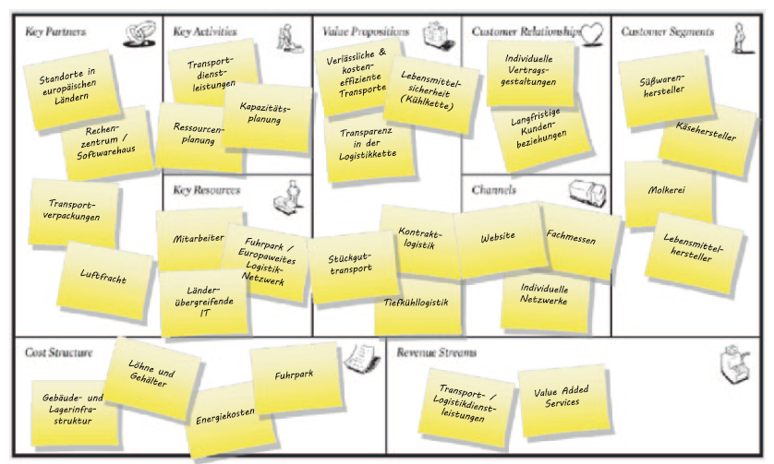
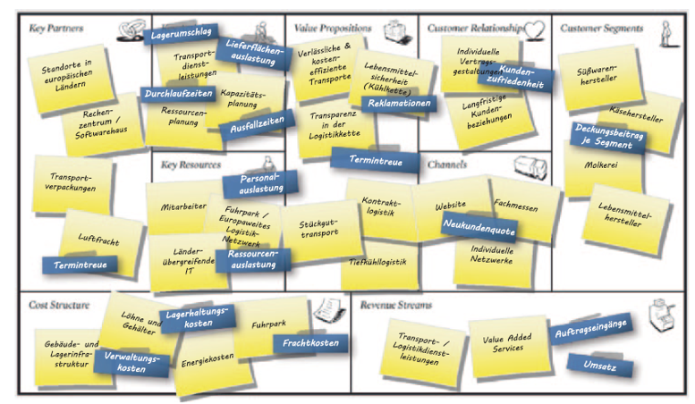
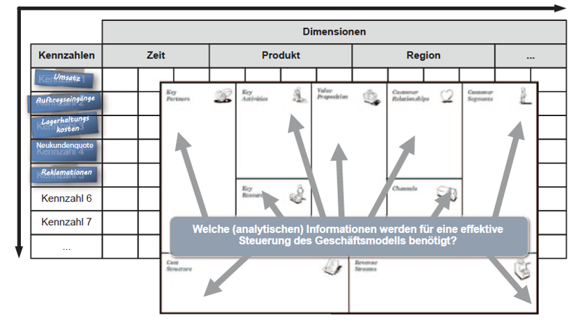
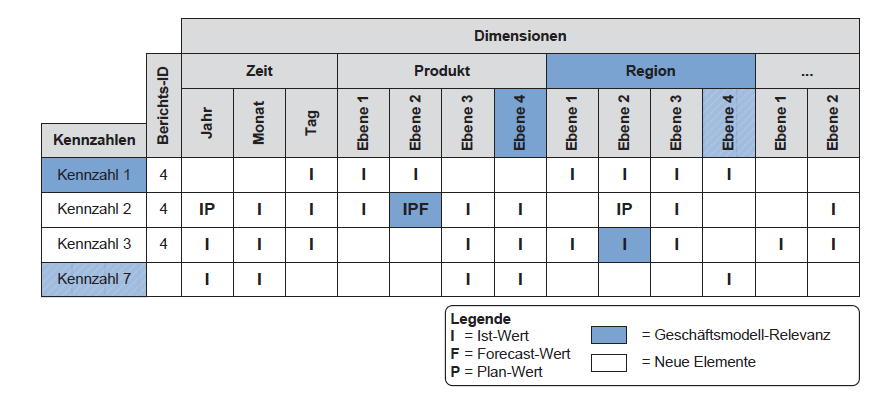
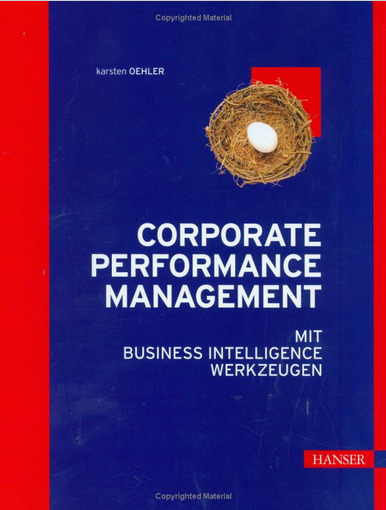